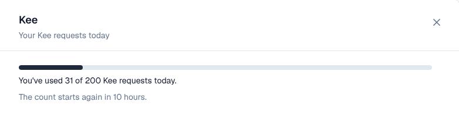
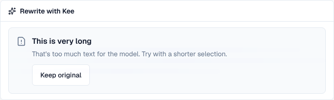
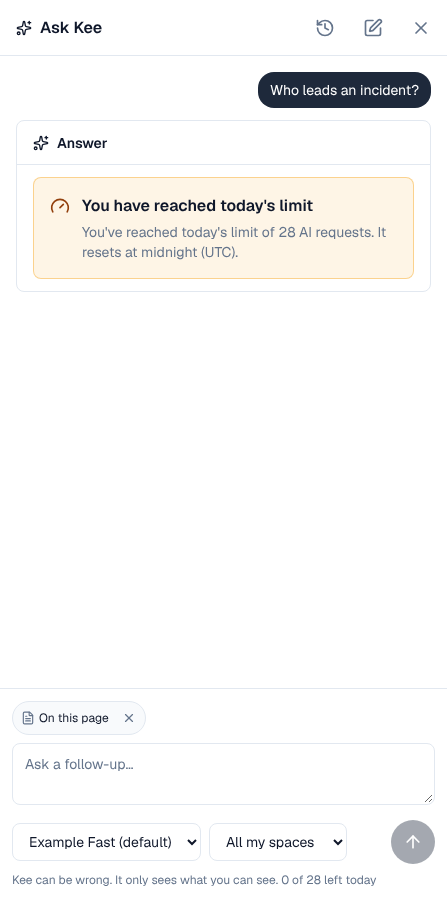

Kee is the Wiki's AI. It helps you write in the editor, sums up long pages, and answers questions from the pages you can read, with links to where it found each answer. Kee runs on your organisation's own account with a model provider, set up by an administrator.
1. What Kee does
| Feature | Where | Docs |
|---|---|---|
| Writing help in the editor | A section's menu, a text selection, and Write the page with Kee on an empty page: rewrite, shorten, lengthen, fix spelling and grammar, change the tone, translate, write a new section or a first draft | Writing with Kee |
| Writing helpers | A section's menu: review against the space's style guide, action items from meeting notes, a diagram from text, and tables | Kee's writing helpers |
| Title, label and duplicate suggestions | Suggest a title and Suggest labels in the editor, and This page may already exist under a new page's title, with a merge you apply | Titles, labels and duplicate pages |
| Images | Describe with Kee in the image dialog, and images added to a question in Ask Kee | Images and Kee |
| Page summaries | Summarise with Kee in the line under a long published page's title | Page summaries |
| Ask Kee | Ask Kee in the top bar, on every screen: answers from your pages and their attached files, help with the Wiki itself, and changes Kee proposes for you to apply | Ask Kee |
| Kee studio | Agents: Kee with instructions, knowledge and allowed actions, built, tried and shared by you | Kee studio |
| What changed, in words | Comparing two versions in a page's history | Page history |
| Suggestions for new questions | Under a question you asked in Q&A | Q&A |
| Space digest | This week in the space on a space's overview: what was new or changed, made once a week | The weekly space digest |
| Import cleanup | Tidy the imported pages under a finished import on a space's Import tab: tidy-ups you review and apply | Tidy imported pages |
| Your own AI app | Connect Claude, Cursor or another AI app to the Wiki as you | Connect AI apps |
Kee never changes anything on its own. In the editor you see the result first and choose whether to put it on the page. In Ask Kee, a change Kee proposes (also a merge of two pages) waits for you to Apply it. Summaries, suggestions and answers are only shown to you.
2. Who gets Kee
You see Kee's buttons and menus only when all of these are true. If one is missing, Kee simply isn't there: nothing is greyed out.
- The Wiki has a Pro licence (or higher), and an administrator turned Kee on, connected a provider and chose a default model.
- The feature is switched on (each one can be turned off on its own).
- You hold the Use Kee permission. By default every member and admin does; an administrator can change that.
- For anything about a space's pages: Kee is on in that space. A space's admins can turn it off; its menus then say Kee is off in this space.
People who aren't signed in never get Kee, even in public spaces.
3. Kee can be wrong
Kee's answers come from a language model. Check what it writes before you rely on it or publish it, and open the sources of an answer to see what the page really says. Kee only sees what you can see: it reads pages with your own access, so it can't tell you about pages you can't open.
4. Your daily limit
An administrator can limit how many Kee requests each person makes per day. Every action counts as one request: one rewrite, one summary, one question. A summary someone else already made is reused and doesn't count. A request that is refused doesn't count either.
- Profile → Kee (in your profile settings) shows how many you have used today and when the count starts again.
- The Ask Kee panel shows how many you have left today, under the question box.
- The day ends at midnight UTC.

5. Notices
When Kee can't do what you asked, it says why in place of the answer. Nothing on the page changes.

| Notice | What happened | What to do |
|---|---|---|
| You have reached today's limit | You used all your requests for today. Nothing was sent. | Wait until midnight UTC, or ask an administrator to raise the limit. |
| This month's budget is used up | The organisation's monthly Kee budget is spent and Kee is paused. Nothing was sent. | Ask an administrator. |
| Too many requests at once | Too many requests within a minute. Nothing was sent. | Wait a moment and try again. |
| The model provider is not answering | The provider was busy, slow or unreachable, even after several tries. | Try again later. The request is kept, so Try again sends it again. |
| Off for this space | The space's admins turned Kee off. Its pages are not sent to a model. | Nothing: ask the space's admins if you need it. |
| This is very long | The text is too long to send in one go. Nothing was sent. | Work on a smaller part: a section or a selection. |
| Stopped before the end | The model reached its length limit. The part shown is not applied. | Continue carries on where it stopped. |
| The model declined this request | The model gave no answer. | Rephrase the request. |
| The answer stopped early | The connection was lost part way. The part shown is incomplete and not applied. | Try again. |
| The answer could not be used | The answer couldn't be turned into page content. | Try again. |
A few problems need an administrator, and the notice is titled Kee needs an administrator: "The AI provider rejected the server's credentials", "The model is no longer available at the provider" and "AI isn't set up yet". Administrators are also alerted when a provider rejects its key or keeps failing.

6. Stopping Kee
While Kee is working, Stop (or Esc) ends the request at once. What was written so far is not put on the page. In Ask Kee, what was written so far stays in the conversation.
7. Accessibility and phones
- Kee's working state is announced to screen readers when it starts and when the answer is ready.
- With reduced motion turned on in your system, Kee's border doesn't move and text appears a sentence at a time instead of a word at a time.
- On a phone or a narrow window, the editor's Kee panel and the Ask Kee panel open as a sheet from the bottom of the screen.
8. For administrators
Setting Kee up, who gets it, limits and what is sent to the provider: Set up Kee in the admin guide.